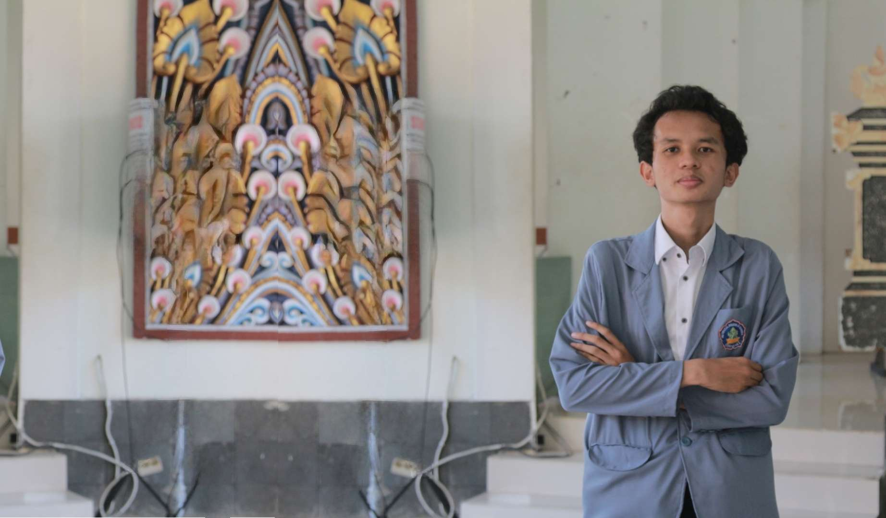

Selamat Datang

Mahasiswa Prodi D4 TRPL I Gede Dhananjaya
21 September 2023
I Gede Dhananjaya atau kerap dipanggil Dhanan merupakan mahasiswa dari Program Studi Sarjana Terapan Teknologi Rekayasa Perangkat Lunak, di Universitas Pendidikan Ganesha. Lahir di Jakarta pada 02 November 2004 beragama Hindu dan kini bertempat tinggal di perumahan Graha Panji Asri. Dibesarkan di Jakarta tentu membuat pemuda dengan nama Bali ini belum fasih berbahasa Bali Selain mengikuti perkuliahan pada umumnya, Dhanan juga mengikuti organisasi Himpunan Mahasiswa Jurusan Teknik Informatika sebagai Koordinator Mahasiswa untuk Prodinya pada masa jabatan 2023/2024